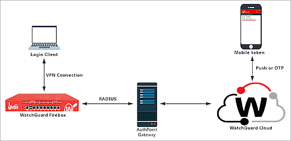
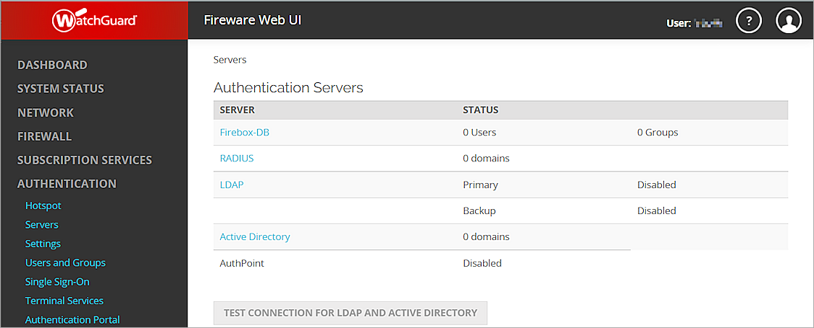
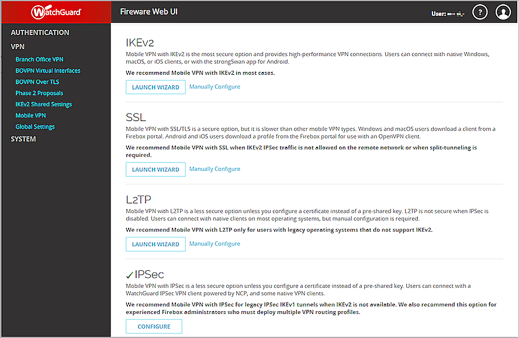
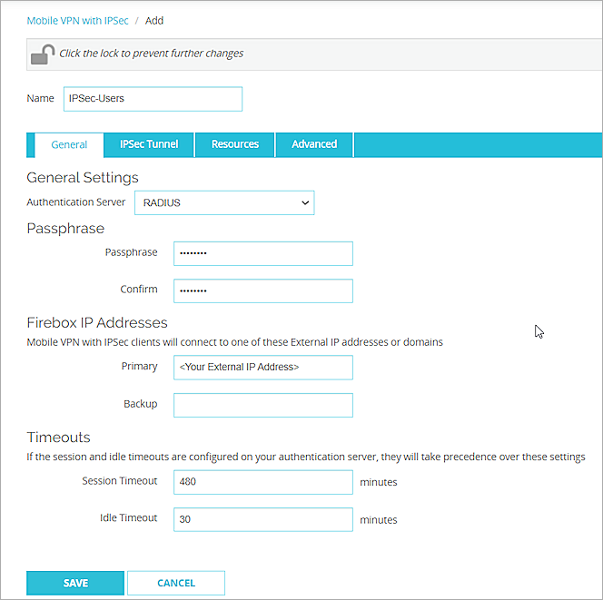
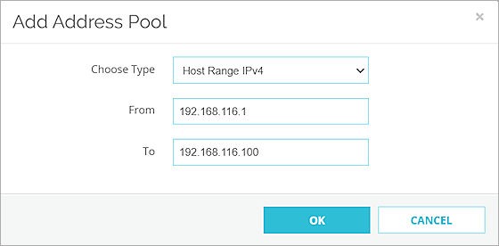
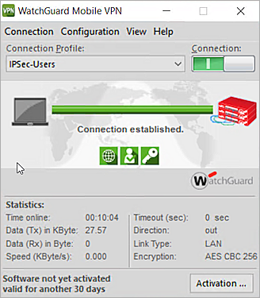

Deployment Overview
This document describes how to set up multi-factor authentication (MFA) for Mobile VPN with IPSec.
Your WatchGuard Firebox must already be configured and deployed before you set up MFA with AuthPoint. Your WatchGuard Firebox can be configured to support MFA in several modes. For this integration, we set up RADIUS with AuthPoint.
For RADIUS authentication, users can authenticate with a push notification or a one-time password (OTP). You choose which authentication method users can use when you configure the authentication policy in AuthPoint. The steps in this integration guide are for both authentication methods.
This integration was tested with Fireware v12.8.2.
WatchGuard Firebox Authentication Data Flow with AuthPoint
AuthPoint communicates with various cloud-based services and service providers with the RADIUS protocol. This diagram shows the data flow of an MFA transaction for a WatchGuard Firebox.

Before You Begin
Before you begin these procedures, make sure that:
- A token is assigned to a user in AuthPoint
- You have installed and configured the AuthPoint Gateway (see About Gateways)
- You have installed the IPSec Client
Configure the Firebox
You must configure the RADIUS authentication settings and enable Mobile VPN with IPSec on your Firebox.
Configure RADIUS Authentication
When a user authenticates with AuthPoint MFA, AuthPoint does not send a response to the Firebox until the user approves the push notification that is sent to them or until the push authentication expires.
When you configure the RADIUS authentication server, the Timeout value must be greater than the push timeout for AuthPoint (60 seconds). With the default settings, if a user does not approve the push notification that is sent to them within 30 seconds, the Firebox will fail over to another radius server, even though the current server is not down.
- Log in to Fireware Web UI (https://<your firebox IP address>:8080).
- Select Authentication > Servers.
The Authentication Servers page appears. - From the Authentication Servers list, click RADIUS.
- Click to make changes.
- Click Add to configure a RADIUS authentication server.
- In the Domain Name text box, type your domain name. In our example, we type RADIUS.
- In the Primary Server Settings section, select the Enable RADIUS Server check box.
- In the IP Address text box, type the IP address of the RADIUS server (AuthPoint Gateway).
- In the Port text box, leave the default port setting of 1812. This is the default port used for communication with the RADIUS server (AuthPoint Gateway).
If you already have a RADIUS server installed that uses port 1812, you must use a different port for the AuthPoint Gateway.
- In the Shared Secret and Confirm Secret text boxes, type a shared secret key. This key is used to communicate with the RADIUS server (AuthPoint Gateway).
- In the Timeout text box, type 60.
- Leave the default value for other settings.


- Click Save.
Configure Mobile VPN with IPSec
You must configure Mobile VPN with IPSec on your Firebox to allow secure, remote connections to your protected network. This configuration enables MFA for your users.
- Select VPN > Mobile VPN.
- In the IPSec section, click Configure.
- Click to make changes.
- Click Add to add a new group.
- In the Name text box, type a group name that matches the name of the AuthPoint group or Active Directory group the your users belong to. This is case-sensitive.
- From the Authentication Server drop-down list, select RADIUS.
- In the Passphrase and Confirm text boxes, type a passphrase to encrypt the mobile VPN profile (.wgx file) that you distribute to users in this group. The passphrase can only use standard ASCII characters. If you use a certificate for authentication, this passphrase is also used to encrypt the exported certificate file you send to users.
- In the Primary text box, type the external IP address of the Firebox that the VPN client connects to.
- Select the Resources tab.
- Select the Allow All Traffic Through Tunnel check box.
- In the Virtual IP Address Pool section, click Add.
- From the Choose Type drop-down list, select Host Range IPv4.
- In the From and To text boxes, type a range for your virtual IP addresses. The IP addresses in the virtual IP address pool cannot be used for anything else on your network.
- Click OK.
- Click Save.
- In the Groups list, select your group.
- From the Client drop-down list, select WatchGuard Mobile VPN.
- Click Generate and save the <group name>.ini file.





Configure AuthPoint
Before AuthPoint can receive authentication requests from the Firebox, you must:
- Specify the Firebox as a RADIUS client resource in AuthPoint.
- Add an authentication policy for the Firebox RADIUS client resource or add the Firebox RADIUS client resource to an existing authentication policy.
- Bind the Firebox RADIUS client resource to the AuthPoint Gateway.
Add a RADIUS Client Resource in AuthPoint
From the AuthPoint management UI:
- From the navigation menu, select Resources.
Click Add Resource.
The Add Resource page opens.

- From the Type drop-down list, select RADIUS Client.
Additional fields appear.

- In the Name text box, type a descriptive name for the resource.
- In the RADIUS client trusted IP or FQDN text box, type the IP address that your RADIUS client uses to send RADIUS packets to the AuthPoint Gateway. This must be a private IP address. For Fireboxes, this is usually the Trusted IP address of your Firebox.
- From the Value sent for RADIUS attribute 11(Filter-Id) drop-down list, specify what is sent for the attribute 11 (Filter-ID) value in RADIUS responses. You can choose to send the user's AuthPoint group or the user's Active Directory groups.
- In the Shared Secret text box, type the shared secret key that you specified in theConfigure RADIUS Authentication section. This is the password that the RADIUS server (AuthPoint Gateway) and the RADIUS client (Firebox) will use to communicate.
- Click Save.
Add a Group in AuthPoint
You must have at least one user group in AuthPoint to configure MFA. If you already have a group, you do not have to add another group.
Your AuthPoint group name must exactly match the group name on the authentication server and the group name you specified on your Firebox. This is case-sensitive.
To add a WatchGuard Cloud-hosted group to the WatchGuard Cloud Directory:
- Go to Configure > Directories and Domain Services.
- Click the WatchGuard Cloud Directory domain name. If you have not yet added the WatchGuard Cloud Directory, click Add Authentication Domain and select the WatchGuard Cloud Directory.
The New Group page appears.

- In the Groups tab, click Add Group.
- In the Group Name text box, type a descriptive name for the group.
- (Optional) In the Description text box, type a description of the group.

- Click Save.
Your group is added to the WatchGuard Cloud Directory and to AuthPoint.
Add an Authentication Policy to AuthPoint
Authentication policies specify which resources users can authenticate to and which authentication methods they can use (Push, QR code, and OTP).
You must have at least one authentication policy in AuthPoint that includes the RADIUS client resource. If you already have authentication policies, you do not have to create a new authentication policy. You can add this resource to your existing authentication policies.
Users that do not have an authentication policy for a specific resource cannot authenticate to log in to that resource.
Mobile VPN with IPSec only supports push authentication or OTP authentication. Users cannot choose between the two authentication methods. If you enable both the push and OTP authentication methods for a policy, RADIUS client resources will use push notifications to authenticate users. To allow users to authenticate with OTP, you must select only the password and OTP authentication methods.
To configure an authentication policy:
- From the navigation menu, select Authentication Policies.
The Authentication Policies page opens.

- Click Add Policy.
The Add Policy page opens.

- In the Name text box, type a name for this policy.
- From the Select the Authentication Options drop-down list, select Authentication Options, then select which authentication options users can choose from when they authenticate.
If you enable the push and OTP authentication methods for a policy, RADIUS client resources associated with that policy use push notifications to authenticate users.
QR code authentication is not supported for RADIUS client resources.
- From the Groups drop-down list, select which groups this policy applies to. You can select more than one group. To configure this policy to apply to all groups, select All Groups.
- From the Resources drop-down list, select the resource that you created in the previous section. If you want this policy to apply to additional resources, select each resource this policy applies to. To configure this policy to apply to all resources, select All Resources.

-
(Optional) If you have configured policy objects such as a Network Location, select which policy objects apply to this policy. When you add a policy object to a policy, the policy only applies to user authentications that match the conditions of the policy objects. For example, if you add a Network Location to a policy, the policy only applies to user authentications that come from that Network Location. Users who only have a policy that includes a Network Location do not get access to the resource when they authenticate outside of that Network Location (because they do not have a policy that applies, not because authentication is denied).
For RADIUS authentication, policies that have a Network Location do not apply because AuthPoint does not have the IP address of the user.
If you configure policy objects, we recommend that you create a second policy for the same groups and resources without the policy objects. The policy with the policy objects should have a higher priority.

- Click Save.
Your policy is created and added to the end of the policy list.When you create a new policy, we recommend that you review the order of your policies. AuthPoint always adds new policies to the end of the policy list.
Bind the RADIUS Resource to a Gateway
To use RADIUS authentication with AuthPoint, you must have the AuthPoint Gateway installed on your corporate network and you must assign your RADIUS resources to the Gateway in the AuthPoint management UI. The Gateway functions as a RADIUS server.
If you have not already configured and installed the AuthPoint Gateway, see About Gateways.
To assign your RADIUS resources to the Gateway:
- From the navigation menu, select Gateway.
- Select the Name of the Gateway.
-
From the RADIUS section, in the Port text box, type the port number used to communicate with the Gateway. The default ports are 1812 and 1645.
If you already have a RADIUS server installed that uses port 1812 or 1645, you must use a different port for the AuthPoint Gateway.
- From the Select a RADIUS Resource drop-down list, select your RADIUS client resource.
- Click Save.
Add Users to AuthPoint
Before you assign users to a group, you must add the users to AuthPoint. There are two ways to add AuthPoint user accounts:
- Sync users from an external user database
- Add WatchGuard Cloud-hosted AuthPoint users
Each user must be a member of a group. You must add at least one group before you can add users to AuthPoint.
To import users from Active Directory, Microsoft Entra ID, or an LDAP database, you must add an external identity in the AuthPoint management UI. External identities connect to user databases to get user account information and validate passwords.
- To sync users from Active Directory or an LDAP database, you must add an LDAP external identity
- To sync users from Microsoft Entra ID, you must add a Microsoft Entra ID external identity
When you sync users from an external user database, you can sync any number of users and they are all added to AuthPoint at one time. Users synced from an external user database use the password defined for their user account as their AuthPoint password.
To learn how to sync users, go to Sync Users from Active Directory or LDAP and Sync Users from Azure Active Directory.
You create WatchGuard Cloud-hosted users and groups from the WatchGuard Cloud Directory in WatchGuard Cloud. Directories and Domain Services is where you add shared authentication domains for WatchGuard Cloud devices and services, such as AuthPoint.
Users that you add to the WatchGuard Cloud Directory are automatically added to AuthPoint as well.
You add local AuthPoint users form Directories and Domain Services. You manage the users in AuthPoint on the Users page.
When you add WatchGuard Cloud-hosted AuthPoint users, you choose whether the user is an MFA user or a non-MFA user.
- MFA users are user accounts that will use AuthPoint multi-factor authentication to authenticate. This is not related to the AuthPoint Multi-Factor Authentication license type.
- Non-MFA users are users that will only ever authenticate with a password, such as a service account user. Non-MFA users do not consume an AuthPoint user license and cannot authenticate to resources that require MFA. They can only authenticate to protected resources if the non-MFA user account has a password only authentication policy for that resource.
After you add a user, you can edit the user account if you need to change their account type. When you change a user account from MFA to non-MFA, AuthPoint deletes the tokens and password vault (if applicable) that belong to the user. This action cannot be undone.
Unlike users synced from an external user database, WatchGuard Cloud-hosted AuthPoint users define and manage their own AuthPoint password. When you add a WatchGuard Cloud-hosted user account, the user receives an email that prompts them to set their password.
To learn how to add WatchGuard Cloud-hosted AuthPoint user accounts to the WatchGuard Cloud Directory, go to Add Local Users to an Authentication Domain.
Test the Integration
To test the integration of AuthPoint and the configuration of your Mobile VPN with IPSec, you authenticate with a mobile token on your mobile device. For Mobile VPN with IPsec, you can authenticate with a one-time password (OTP) or a push notification.
- OTP— Type your password and append your OTP to the end of your password. Do not add a space.
- Push — You receive a push notification in the mobile app that you must approve to authenticate.
In this example, we show the push authentication method.
- Open your WatchGuard Mobile VPN with IPSec client.
- Select Configuration > Profiles and import the <group name>.ini config file. This is the file you generated at the end of the Configure Mobile VPN with IPSec section.
- Click Add / Import.
- Select Profile Import. Click Next.
- Select your file. Click Next to finish.
- Select your profile as default. Click OK.
- Select Connection > Connect.
- Type your AuthPoint user name and password.
- Approve the authentication request that is sent to your mobile device.
You are logged in successfully.
